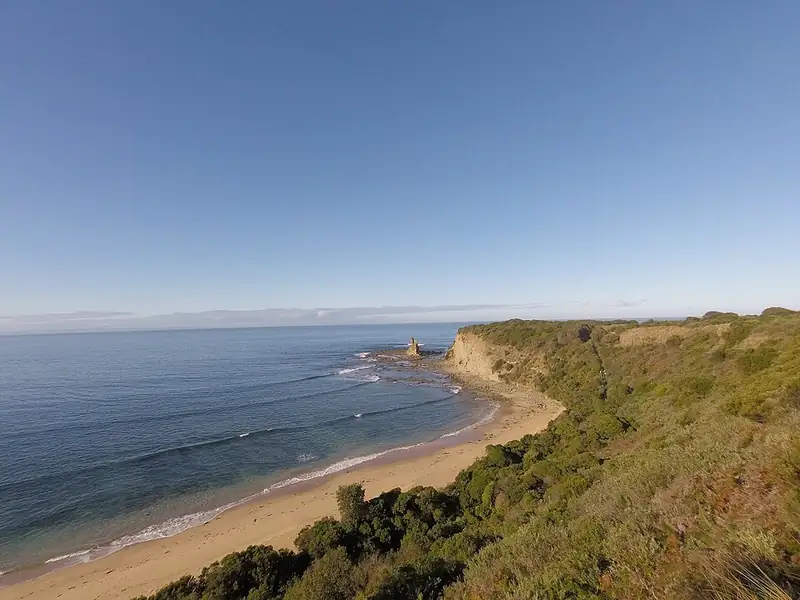

Eagles Nest, Inverloch
Eagles Nest is a beach in Inverloch, in the Bass Coast Shire Council area, good for all ages. Dogs are not allowed.


Quick facts
- Dogs
- Not allowed
Details
- Dogs
- not allowed (Parks Victoria)
Questions parents ask
- Where is Eagles Nest?
- Eagles Nest is in Inverloch, Victoria.
- Is Eagles Nest free?
- Yes. It is a public beach, free to visit.
- Can I bring my dog to Eagles Nest?
- No, dogs are not allowed.
Nearby places
- Shack Bay
Beach · InverlochNo dogsFree
- The Caves
Beach · InverlochDogs on leadFree
- Bunurong Marine National Park
Park · InverlochFree
- Cape Paterson Nature Conservation Reserve
Park · Cape PatersonFreeCoach 1 min walk
- Playground at Outrigger Reserve
Playground · InverlochFreeBus 9 min walk
- Invy's Kebab
Cafe or restaurant · InverlochToilet nearbyCoach 4 min walk
- Skate park on Reilly Street
Skate, BMX or pump track · InverlochToilet nearbyFreeCoach 3 min walk
- Wonthaggi Principal Library
Library · WonthaggiToilet nearbyFreeBus 2 min walk